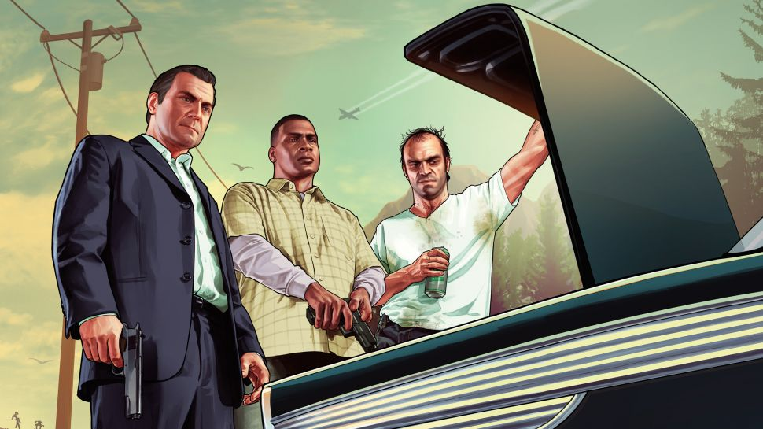

GTA 5 cheats and vehicle spawns
(Image credit: EA)
Winners never cheat and cheaters never win. Unless you're in Los Santos in which case the winners absolutely cheated and will continue to win again and again. If you need to cheat a little in GTA 5 we have all the crib notes you need. Cheat codes for GTA 5 on PC can net you invincibility, any gun or car you like, clear your wanted level, and more.
To bring up GTA 5's console, hit the tilde key (~), or whatever key is directly to the left of the 1 at the top of your keyboard. Type in any of the cheat codes below in all caps just as written. Hit enter and you've now become an official GTA 5 cheater. Spawn yourself a motorcycle and flaming ammo rounds—now you're a winner!
change your wanted level
FUGITIVE - This will increase your wanted level by one star each time you enter it.
LAWYERUP - This will have the opposite effect, dropping your wanted level by one star.
invincibility, run faster, moon gravity, and more
PAINKILLER - Invincibility for five minutes.
TURTLE - Instantly give yourself maximum health and armour.
CATCHME - Makes you run a lot faster.
GOTGILLS - Swim faster.
FLOATER - Enables moon gravity, but it doesn't have a massive effect, really.
SNOWDAY - Makes your car tires slippery.
TOOLUP - This will fill your inventory up with one of every type of weapon and plenty of ammo.
SKYDIVE - Gives you a parachute.
POWERUP - Recharges the special ability meter of each singleplayer character.
DEADEYE - Enables slowmotion aiming, and stacks up to three times.
exploding bullets, exploding punches, and other comic effects
HOPTOIT - Super jump that's a lot of fun, and you don't take damage when you land.
HOTHANDS - Explosive punch melee attacks. Is silly and fun.
HIGHEX - Explosive ammo rounds
INCENDIARY - Flaming ammo rounds
LIQUOR - Drunk mode, in case you needed that.
SKYFALL - Spawns you in the sky.
SLOWMO - Makes the world slow, and can be entered several times for maximum slow motion.
MAKEITRAIN - Cycles between weather states.
vehicle spawns
BANDIT - BMX bike spawn
FLYSPRAY - Duster crop duster aircraft spawn
RAPIDGT - Rapid GT luxury roadster coupe spawn
BUZZOFF - Buzzard helicopter.
COMET - Comet sports car spawn
OFFROAD - Sanchez dirt bike.
HOLEIN1 - Caddy golf cart spawn
BARNSTORM - Mallard stunt plane spawn
TRASHED - Trashmaster garbage truck spawn
VINEWOOD - Stretch limo spawn
ROCKET - PCJ-600 motorcycle spawn
Is there a GTA 5 money cheat?
It's a shame, but GTA 5 sadly has no money cheat for instant cash, and never has. You'll have to earn cash from doing in-game activities instead, like playing the stock market, or from businesses or side missions on the map. You can't glitch the game to receive extra money, either.
If you're wondering about GTA Online money cheats or hacks, Rockstar firmly doesn't allow them. "Our primary focus is on protecting GTA Online against modifications that could give players an unfair advantage, disrupt gameplay, or cause griefing. It also bears mentioning that because game mods are by definition unauthorized, they may be broken by technical updates, cause instability, or affect your game in other unforeseen ways."